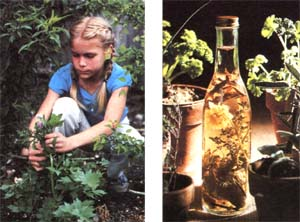

MOTHER feels strongly that youths can be creative "doers" ; working toward more ecological and self-reliant lifestyles . . . whether their tasks be raising chickens on a farm or maintaining rooftop container gardens in the city. To support the endeavors of our often overlooked "underage" citizens, we're glad to publish well written articles from younger children and teenagers concerning projects they've undertaken. However, we recommend that all young authors query (that is, send us a letter telling about the story you'd like to do) before writing a full article. Address inquiries to Mother's Children, THE Mother Earth News 105 Stoney Mountain Road, Hendersonuille, North Carolina 28791.
Last summer, I made herb vinegars and sold them at craft shows. I found out that they were fun and easy to make and profitable to sell!
I got started making herb vinegars when I was working on a Girl Scout badge called "Food, Fibers, and Farming". One of the things I had to do to earn the badge was to grow a fruit, vegetable, or herb and use it in something I could eat. I planted dill and made a few bottles of herb-flavored vinegar to use in salad dressings and for other cooking purposes. When I found out how easy it was to do, I decided that selling the bottles would be a good way to earn money. So I went to work.
Since the only plants I had ever grown before were vegetables, I asked my mom some questions before I got started. The first one was "What herbs can I plant from seed?" I found out there are many kinds of herbs that can be started loom seed. Here are a few: basil (sweet or opal) chervil (needs light to germinate) dill garlic (from cloves) marjoram parsley cage salad burnet thyme
I knew that some herbs can best be started by clipping stem pieces, called cuttings, and rooting them. So my next questions were "How do I plant cuttings?" and "What herbs can I plant from cuttings?" I found out that to start an herb from a cutting, a person snips off part of a "parent" plant and places it in water, soil, or peat moss. [EDITOR'S NOTE: See the sidebar that accompanies this article for additional information on starting cuttings.] Here are some good herbs to raise from cuttings: lemon balm mint (any kind) oregano pineapple sage sage savory scented geraniums tarragon
Later on, I found out that there's still another way to start new plants . . . dividing. To split an herb this way, take a small garden shovel and divide the plant in two at its roots. Dig up one section and replant it somewhere else. Here are some herbs you can plant from divisions: chives lemon balm lovage mint (any kind) tarragon
I'd like to tell you about some herbs that are really good in herb vinegars. Dill tastes very good on salads, so it's especially nice in herb vinegars.
Dill's been used in cooking since ancient times. (Its name comes from the Norse word "dilla", which means "to lull".) Colonial Americans chewed dill seeds to keep from getting hungry during long church services.
When you make dill vinegar, you can use the stems, leaves, or flowers of the plant. But watch out for black swallowtail caterpillars when you're harvesting . . . they love to eat dill. I like to put any caterpillar I catch into an empty fishbowl, feed it, and then watch it pupate.
Tarragon is an herb that tastes a little bit like licorice. It makes a traditional herb vinegar that's often used in French cooking. (The French call the herb "the little dragon".) It's also been used in many other cultures for hundreds of years.
Vinegar flavored with garlic smells so good that it's hard to resist. Garlic is a nice herb to combine with other ones such as basil, lovage, lemon balm, and thyme. To add it to vinegar, just peel a clove and put it into the bottle.
There are many other herbs you can use. Mint, for instance, makes a good vinegar to put on fruit salads and lamb. Salad burnet gives vinegar a cucumber flavor. Lemon balm and lemon thyme give it a citrus taste.
If you want to color your vinegar, you can put in chive flowers to tint it light pink, or opal basil to turn it deep pink. Dill flowers will help give your vinegar a greenish yellow color.
The effects are striking. Sometimes when I use herbs to color my vinegars, people ask me if I put food coloring in the jars!
To make the vinegars, all you need are bottles, vinegar, and herbs. You can use recycled bottles. Old vinegar or cooking oil bottles work well. Some apple juice comes in nice jug shaped half-gallon bottles, which make pretty containers.
There are several different kinds of vinegars you can use. The prettiest and most popular kind is ordinary white vinegar. Apple cider and red wine vinegar can also be used, but they have stronger flavors and darker colors than white vinegar, so you may not be able to taste or see the herbs as well.
When you've got everything together, all you have to do is put several sprigs of the herb or herbs you want to use in a bottle and then fill it with vinegar and screw on the lid. Oh . . . do make sure you wash the herbs in clear water first. Once I forgot to do that, and a lady found a bug in one of my bottles!
After the jars are sealed, you need to let them steep. Just put them in the sun for a couple of days, or let them sit for two weeks indoors. (You can speed the process a bit by warming the vinegar before filling the bottles. But don't boil the liquid, or you may change its flavor.)
All in all, the costs are low. I buy generic 4%-acid vinegar for about $1.50 a gallon and put it in recycled bottles. (A gallon of higher-grade vinegar costs between $1.75 and $2.30.) Each 16ounce bottle of herb vinegar costs me no more than 55d to make. I sell it for $1.95.
If you can do the same and sell four dozen jars at a craft fair, you can easily pay for the fee to enter the show and make a profit. You would take in $93.60 . . . or $67.20 after you subtract the cost of making the vinegars. So even if you had paid $30.00 to get into the show, you'd still get to keep $37.20! If the show cost less than that to enter, you would make even more!
You need to bring a table to any show you go to. (You can use a card table.) And try to set up a nice display, because sometimes it's the display that attracts people. I like to cover my table with burlap and use old wooden boxes for stands. This gives my display a unique and somewhat old-fashioned look. When I go to an outdoor show, I place my vinegars in the sun. The herbs stand out when the sun shines through the jars. The pink vinegars look especially nice.
Be sure to label the jars with your name and address, or hand out cards with your name and address on them, because people will sometimes want to call you afterward to buy more vinegars. One time a lady ordered 36 bottles from me to give as favors at a wedding shower. Boy, was I busy!
You can find out about craft shows where you live by talking to local crafts people or by calling the chamber of commerce. (Find out if the shows will offer a children's rate for your display!) I hope you try making and selling herb vinegars yourself. If you do, I know your herb vinegars will sell like hot cakes! Good luck!
Kate and Fair man fayne, proprietors of the Sandy Mush Herb Nursery (Dept. TMEN, Route 2, Surrett Cove Road, Leicester, North Carolina 28748 . . . catalog $1.00) offered this advice about propagating herbs from stem cuttings-or "slips"-in THE Mother Earth News A-to-Z Home Gardener's Handbook:
The technique isn't difficult. First, fill a small (2-1/2" deep or so) container with a sterile mixture of 3 parts perlite or coarse sand and 1 part peat moss, and water the medium thoroughly. Then cut a 3" to 5" length from a stem or side shoot of a plant . . . remove all lf lower buds, and any leaves on the lower two inches . . . trim the base of the slip so that a leaf node is somewhere on the bottom inch . . . and dip the cut end into a weak solution of commercial rooting hormone (which is available at most garden stores). Now-using a pencil-make a hole about 1-1/2" deep in the starting medium, place the cutting in the cavity, and pack the "soil" snugly around the stem. If the specimen has large (more than 2" lengthwise) leaves, snip off a third of them . . . to minimize moisture loss by transpiration and to promote better air circulation.
Finally, make a "mini greenhouse" for the plant-to-be: Bend each of two lengths of coat-hanger wire into a "U" shape slightly taller than the cutting, and stick the "wickets"-ends down and at right angles to one another-into the soil and over the fledgling. Then slip a clear plastic cover-such as a freezer bag -over the frame, and secure it to the pot with string or a rubber band.
Put the container in a shady place (or cover it with a newspaper "tent"), and remove the plastic once a day for a short time to give the cutting a breath of fresh air, and to make sure the medium is moist (an absolute must). When the slip has grown roots of 1/4" or so, put it into a somewhat larger container . . . and when the roots reach the bottom of that pot, transplant the specimen to its final home.
Growing fresh herbs for use in homemade vinegars can be an enjoyable and profitable pastime. Here, Cathy harvests some of the herbs she will use to make a batch of her vinegars .... The combinations of ingredients you can use are endless. In this container, Cathy blended garlic, lovage, tarragon, chive blossoms, English thyme, and Dr. Livingston geranium (with white vinegar, of course) to make a beautiful and useful salad dresser.
|
STAFF PHOTOS |
|
 |